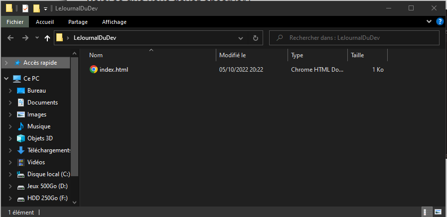
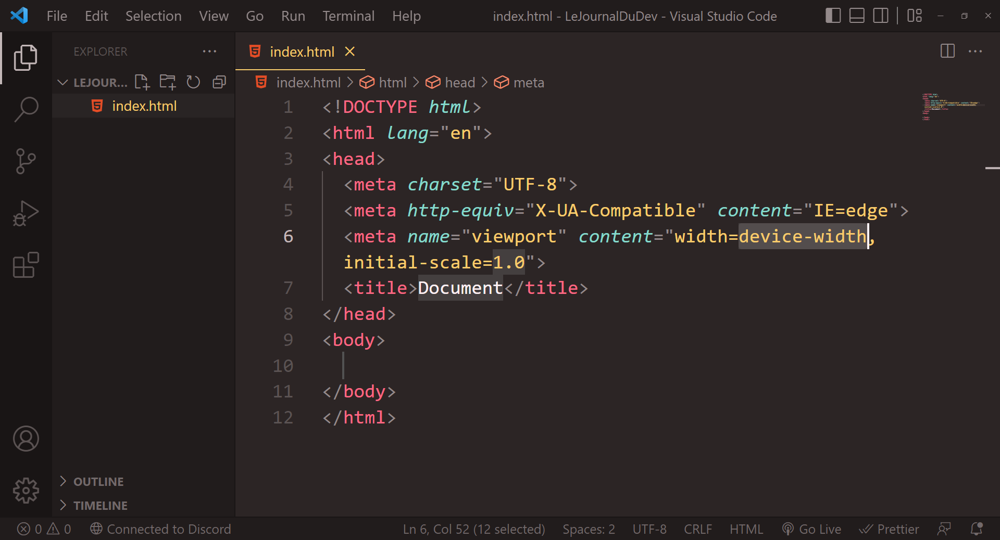

Le Journale du Dév
Fait pour les jeunes programmeur en quetes de nouveaux apprentissage
La sctructure de base d'un site
Les normes du web
Les conteneur html5 et bonne maniere indispensable à tous site internet
Les Base de la création Web
Comprendre l'HTML5
langage balistique et compréhension du web!
Sommaire:
Prérequis :
un éditeur de texte tel que Visual Studio Code ou autres(tous les raccourcis seront valable uniquement pour VS Code), et un navigateur(chrome, ...)
Introduction :
html5 est un langage de balistique, les balises sont des conteneurs, des boites qui peuvent contenir d’autres boites ou juste des objets, tel que du texts ou des images. La structure de touts les site internets utilise HTML5, il est donc essentiels de la maîtriser pour apprendre le développement web.
Création de votre premier page :
Pour la création de votre premier site internet vous allez créer un nouveau dossier, qui sera la dossier racine de votre site web. Dans se dossier vous allez créer la page d’accueil, qui est enfaite un fichier au nom de ‘index.html’, html étant l’extension du ficher qui est utilsée pour créer vos pages. Ensuite ouvrez le ficher avec VS Code(visual studio code).
VS Code est très simple a prendre en main, les paramètres logiciel se trouvent en haut, les dossiers projets et extensiond sont sur le coté gauche et votre ficher se situe au centre. Pour commencer a coder nous allons créer les balises principal d’un site. Marquez donc ‘!’ ou ‘html’ puis utilisez le raccourcis ctrl+space(control et bar d‘espace puis entrée, se raccourcis permet de faire de l’auto-complétion(le logiciel écrit a votre place).
Voici se que vous devez observer :
 Définitions :
Les Balises
Avec le visuelle c’est tout de suites plus simple de comprendre, en effet les balises commencent
toutes par ‘<’ et se termine par ‘> ‘.
On peut voir qu’il existe 2 grande famille de balise, celle qui s’ouvre et se ferme( en 3 parti, ouverture,
contenue, fermeture) que l’on vas appeler balise conteneur comme : <body>...</body>
et les balises simple tel que <!DOCTYPE html>.
Les balise conteneur s’écrivent de cette facon.
Balise ouverte <name>, Contenue(sous forme de texte ou de balise), Balise fermer </name>, il ne faut donc
pas oublier d’écrire / avant le nom sur la balise fermer.
Alors que les balises simple elle s’utilise simplement avec <name> ou <name/>
(le / a la fin est uniquement visuelle et sert juste a savoir que c’est une balise simple).
Les Attributs
Les Attributs son des caractéristiques que l'on donne a une balise. Au niveau de
la balise d’ouverture <html lang=’fr’>, on peut observer votre premier attribue. Celui-ci
se nome lang, qui signifie langage et il a pour valeur ‘fr’. Cette instruction signifie a votre navigateur
que le site que vous consulter est écrit en français. Pour utiliser un attribue on écrit d’abord sont nom puis
un lui affect un texte, une chaine de characteres, car la reponse est entre de côte(« ‘ »), voici un autre exemple que nous allons
voir plus tard, la balise d'image: <img src="./assets/img.png" alt="une image" width="200">
l’attribut src est la reference(ici a une image) dans votre dossiers, alt est une alternative(pour connexion
lent ou non-voyant/mal-voyant ) et width est la largeur de l’image en pixel.
première balise html et les texts
Head et Body
la balise <head> est « l’esprit » de votre site, il contient tout se qui n'est pas directement
affiché sur la page, tel que le nom de l’onglet, l’icône de la page, les références a des feuilles de style,
ou meme ‘l’alphabet’ utilser par le site.
Alors que le body lui est toutes la forme de la page, comme par exemple : les boutons, les textes, les formulaires, les images, les listes de votre site.
Revenez dans votre dossiers et ouvrer index.html avec votre navigateur et avec Vs Code. Sur Vs Code vous allez
vous rendre compte de 2 choses, la page est vide et le titre de la page est 'document'. Si vous avez un minimum
d’esprit critique vous avez compris pourquoi ? Car le body est vide et que dans le head il y a une balise
<title>Document</title>. Vous venez de découvrir en autonomie une nouvelle balise!
Vous pouvez maintenant changer le titre de l’onglet a votre guise, il vous suffit de changer le contenue entre
les 2 balises. Personnellement je vais faire un site sur les langages de progammation. Je vais donc le écrire ‘Les langages de programation‘.
Maintenant nous allons nous concentrez uniquement sur le body pour apprendre a faire un page fonctionnelle.
Commençons par rajouter un texte, un titre plus précisément. Pour cela il nous faut un balise conteneur car on vas mettre du texte dedans. Les balises titre se nome h1, h2, …, h6. La lettre ‘h’ signifie titre et le nombre qui suit correspond a la force du titre, en effet plus le nombre sera petit plus le titre auras de l’importance, que se soit de par ça taille, mais pas que! Le référencement de votre page dépend en grand partie de votre structure html. Il est important de lié le bon texte a la bonne balise. Une balise h1 se doit d’être utiliser qu’une seule fois pour par exemple énoncer le nom du site ou bien le slogan, se n’est pas obligatoire mais se sont des bonnes pratiques a prendre en compte dés le debut. Bref, h2 correspond à un titre, h3 un sous-titre, … .
Pour écrire notre tire il suffit donc de mettre : <h1>Liste des langages</h1>, simple non ?
Maintenant ajoutons un paragraphe, les paragraphes se noment ‘p’(d’ailleur il ont peut d’influence au niveau
du référencement), <p></p>. A l’intérieur du paragraphe marquer "Lorem20" puis utiliser le
raccourcis d’auto-complétion(ctrl+space), cela vas vous marquer un text de 20 mots a l’intérieur du paragraphe
en latin, pratique pour marquer du texte a remplir plus tard non? Bien sur vous pouvez marquer le nombre que
vous désirez après le ‘lorem’. Mettons maintenant un commentaire, un texte invisible dans la page qui est
présent uniquement sur le fichiers html. Pour ceci nous allons nous situé au dessus du paragraphe et l’ont vas
faire le raccourcis ctrl+/ pour obtenir le resultats :
dans se qui ressemble a une balise vous allez pouvoir marque se que vous voulez(par exemple : Intro)
Mis en forme des textes
Bon je vous l’accorde le style de la page n’est pas très bon, essayons de regler un peu le probleme. Si vous
souhaitez mettre du texte en emphase (italique) il faudras mettre le texte entre des balises conteneurs
<em></em>. Pour le gras il y a 2 solutions qui s’offre a vous : <b></b> et
<strong><strong>, bien qu’ils ont exactement le même visuelle, il n’ont pas du tout la même
sémantique. « sémantique » c’est quoi ? C’est le terme pour le rôle/sens de votre balise, cela influe sur le
référencement. D’ailleurs les balise h1 à h6 n’ont pas le même niveau de sémantique, c’est se que je vous
expliquer juste avant. Concernant les balises de ‘style gras’, <b> est juste un style il n’as
pas d’influence sur la sémantique. Alors que <strong>, signifie un bout d’un texte qui est mis
en avant. En html il est compliquer de modifier le style des pages(enfaites le langage n'est tout simplement pas
fait pour ça).
Les balises de mis en contenue
Si vous voulez faire un balise conteneur mais que vous ne saviez pas la quelle choisir, il faut mettre une
balise <div></div> si les contenus dedans est grand(surtout si il contient plusieurs balises)
et <span></span> si il ne contient seulement du texte.
Vous pouvez aussi ajouter à vos balises des ‘marques’ pour les reconnaîtres, se sont les attribues class=’’ ou id=’’, id ne peut avoir qu’une seule fois le même valeur dans la page alors que la class elle peut contenir plusieurs fois la même valeur.
Les listes
Nous on vas créer une <div> pour contenir notre liste de musique cette div auras un id qui a
pour valeur ‘prog-list’,
<div id=’prog-list’></div>
On vas rajouter un titre de niveau 3(h3) qui contient ‘Liste des langages évalués :’.
Si l’on souhaite faire un liste ordonnée il faudra créé un balise conteneur <ol></ol>, si la
liste n’as pas d’ordre(classement) il nous faut une balise conteneur ul(liste a puces), ici la liste ne serais
pas ordonnée car on vas faire un classement dans un tableau par la suite. Dans cette balise ul nous allons
mettre autant de balise conteneur li(<li></li>) qu’il y auras de langages, vous mettrez
d’ailleurs leur nom a l'intérieur.
Bon vous commencez a être alaise avec les balises ?? attardon nous un peu au attribue !
Les images
Les attribues id et class sont valables sur toutes les balises mais se n’est pas le cas de tous les attribues.
Affichons un image comme exemple. Au dessus de la div prog-list on vas créer une balise unique img
(<img/>) si vous l’avez créer avec le raccourcis d’auto-complétion de VS Code, vous aurez déjà
des attribues sinon il vous faudra écrit « src=’’ alt=’’ » en attribue. Src est le lien de l ‘image, il peut
être pris depuis de source du fichiers (ex : ‘assets/monImg.png’) ou bien juste une adresse d’image sur
internet(ex :’https://images.pexels.com/photos/167092/pexels-photo-167092.jpeg’) récupérable en faisant click
droit sur l’image, « copier l’adresse de l’image ». Dans la attribue alt=’’ il faut mettre la signification de
l’image(pour les non-voyant/mal-voyant ou les liseuse, …). Ensuite il se peut que l’image que vous ayez
choisit n’est pas la taille que vous voulez, pas de problème, mettons lui un attribue width pour régler sa
largeur ou height pour régler sa hauteur, leur paramètre sont des nombres qui corresponde au nombre de pixel,
attention si vous sélectionner les 2 paramètres width et heigth l’image risque d’être déformer. Il est aussi
conseiller de redimensionner directement les images via un logiciel de photos(en tout cas pour les rétrécir)
car cela évite d’envoyer des images trop lourd sur internet.
Les formulaires
Création d'une nouvelle page
Bon maintenant créons une nouvelle page dans la quel on vas mettre en place un formulaire.
Allons dans le dossier(la racine du site) ou se situe ‘index.html’, puis on vas créer un fichiers
‘formulaire.html’ et l’ouvrir avec VS Code. On écrit ‘!’ et on utilise l’auto-complétion(ctrl+space), cela vas
nous créer les balise html5 nécessaire a la page. La balise <html> sert tout simplement a créer
le document, la page internet, il contient tout le temps l’attribut lang(avec comme valeur extension des
adresses url de la langage de la page). Alors que < !DOCTYPE html> lui a pour signification que
le site est fais par une personne maîtrisant le html5.
formulaires
Pour créer un formulaire on vas utiliser la balise conteneur formulaire(<form>) et on vas lui
mettre l’attribut ‘action=’’’ qui seras égale a ‘index.html.
Le formulaire va contenir 2 parties, les informations utilisateur et ses avis par rapport a la liste.
Pour ceci a l’intérieur du formulaire on vas créer une balise conteneur fieldset(balise de regroupement dans
un formulaire). Le regroupement est en générale associer a une légende (un titre) sous forme de balise
présente au sein de de la fieldset, cette balise s’écrit <legend>Votre légende</legend>.
Puis dans de regroupement de formulaire nous allons créer nos premières balise d’interaction, les balises
simple <input />, cette balise contient généralement au moins 3 attribut :
- - type, la forme que prendras l’input.
- - name, utile pour récupérer ses donnée(via le backend en php, NodeJs).
- - id, permet d’identifier le conteneur(pour lui mettre du style ou interagir avec JavaScript).
Créons par exemple un balise pour mettre son nom. <input type=’’ name=’name’ id=’input-name’/>.
Pour mettre son nom il suffit simplement que l’utilisateur écrive sont nom avec un texte. Le type de l’input seras donc ‘texte’.
bon notre champ de texte est présent mais il n’est pas compressible pour l’utilisateur, configurons le un peu plus. Mettez lui l’attribut « placeholder=’votre nom...’ » cela permet de mettre un texte en fond quand le champ est vide, a l’inverse si vous voulez mettre une valeur définie au chargement lors champ de texte il faudra l’attribue value.
Ensuite nous pouvons mettre une taille minimum et maximum avec les attribues minlenght et maxlenght.
Les balises inputs nécessite un label(un nom) qui s’écrit avec un balise conteneur
<label for=’’> votre nom: </label>, pour connecter le label a l’input il faudra mettre un
attribue for identique a l’id de l’input(avec ceci lorsque l’on click sur le label cela nous permet de écrire
directement dans l’input). Bon on commence un peu a comprendre les inputs, maintenant on vas créer 2 inputs,
le premier auras comme type email et le deuxième qui sera de type date pour la date de naissance du
visiteur. Bien sur les 2 nouvelles balises seront configurer avec leur placeholder et leur label.
On recréer un label avec son input mais le type se coup si seras tel, au lieu d’un placeholder on vas mettre un value=’+33 6’. Et pour signaler au utilisateur sans clavier physique(tablette, téléphone) quelle clavier il doit choisir(tel, e-mail, numéric) on utilise l’attribut input mode, ici je pense que vous avez compris qu’il fallait le type tel.
Maintenant on vas voir 2 type d’input qui se ressemble dans les styles mais n’ont pas du tout la même utilité radio et checkbox, checkbox est une case a cocher alors que radio est un selection unique dans un liste. Laisser moi vous montrer. Créons un label avec l’attribue for vide, que l’ont vas remplir avec ‘Sexe :’, puis on vas créer 2 input de type radio avec comme name sex (en tout cas les 2 radio doivent être relier avec le même name) et un id correspondant soit a masculin ou a feminin. Suivit de leur label(masculin et féminin). Voilà a quoi c’est sembler ressembler. Si vous voulez sélectionner un radio ou une checkbox de base il faudra mettre l’attribue checked(sans égale ni côte). Le
radio permet de faire un choix unique(ici masculin, féminin). Alors que si on aurais remplacer le type par
checkbox on aurais pu sélectionner les 2(ou aucun) sans soucis, il est donc plus pratique de l’utiliser dans
des conditions générale d’utilisation. Sortons donc du fieldset pour créer notre checkbox qui aura un label au
nom de ‘Accepter les conditions générales d’utilisation’. Je vais vous montrer une autre disposition avec les
labels et inputs :
<label><input type=’checkbox’ name=’cgv’ /> Acccepter les conditions générale de vente</label>,
avec cette disposition vous êtes pas obliger d’utiliser l’attribue for sur le label.
Créons maintenant un label ‘Votre langage de programmation preferer’ suite à se label créons un balise au nom de select(avec
son name et son id). A l’interieur de la balise select je crée autant de balise
<option value=’1’>C++ </option> qu’il y a de langages dans la lites, la valeur correspond
a se qui seras envoyer en réponse un fois le formulaire rempli. Si l’on souhaite créer des goupes d’option on
vas regrouper plusieurs balise option dans une balise <optgroup label=’’> </optgroup>
l’attribue label correspond au nom du groupe, ici l’on pourrais mettre ‘Langages de haut niveau’, Langages de bas niveau.
On vas ensuite pouvoir place les condition général d’utilisation a la fin(plus conventionnelle). Et maintenant on s’appercoit qu’il manque juste un bouton pour envoyer les données un fois le formulaire rempli. Pour ceci il y a 2 technique, la première la plus traditionnelle avec la balise input de type ‘submit’(n’oublier de lui mettre une value pour le rendre plus visible).
Essayons donc se bouton. Lorsque que l’on utilise le bouton on se fait rediriger sur index.html se qui est
normal(c’est l’action du formlaire(form)) mais nous on voudrais que l’on puisse valider seulement si
l’utilisateur valide les conditions. Pour cela il faut mettre l’attribue required=’’(vide comme ceci) sur
l’input checkbox. La deuxieme facon de créer un boutton et la balise <button>Valider<button>,
a l’inverse si l’on souhaite réinisitialiser le formulaire on vas créer un button ou un input qui seront de
type ‘reset’.
Menu de navigation
Bien maintenant nous allons créer un nouvelle page sous le nom de classement.html avec ses balises html
ensuite dans le body nous allons créer un menu de navigateur avec un balise nav dans cette balise nous allons
créer un liste non-ordonnée (<ul></ul>). Dans celle si nous allons créer les composants de
liste(balise li) avec en attributs class ‘nav-content’. Maintenant qu l’on a la structure de base du menu de
navigation, il faut lui rajouter des liens au autre page du site(ou meme d’un site exterieur) pour cela on
utilise la balise <a href=’mon lien’>Ici le lien</a>. l’attribue href représente le lien ;
soit en depuis le dossier de la page (sous-forme : ‘dossier/sous-dossier/page.html) ou depuis un lien
internet(‘http://www.monsite.com/page.html’). On créer donc autant de lien qu’il y a de page sur notre site
dans chaque li et on lui attribut son href. Bien maintenant que l’ont a un menu de navigation cela vas être
plus pratique pour un utilisateur l’ambda de se balader sur vos page. Si vous souhaiter l’avoir sur toutes les
pages vous avez juste a le copier, coller sur chaque page.
Les tables
Ensuite on vas créer notre classement sous la forme d’un tableau avec les langages en lignes et des caractéristiques qui aurons une note différentes en fonction du langage. Malheureusement le styles des tableaux de base en html est très peu visible. Je vous conseillerais donc d’ajouter un peu style plus tard. Commencons déjà par créer notre tableaux avec la balise table. Ensuite pour créer un ligne il faut utilisé la balise tr(table row) et pour les cellules au sein de la ligne on utilise td pour les cellules classique et th pour les cellules importante(par ex : nom de langage).
Nous il nous faut une premières lignes en tant que entête, pour ceci avant de créer la ligne on créer un balise thead(il existe aussi le tbody et tfoot) dans se thead on créer un tr et dans la tr on créer autant de th que vous voulez de colonne(ici il y auras la facilité d'apprentissage, la vitesse de calcule et sa célébrité). Pour plus de visibilité on vas créer un balise style dans le head de html. Dans cette balise style on vas recopier ceci(cela permet de faire des bordures).
<style>
table,th,td {
border: 1px solid black;
}
</style>
Bien jouer vous venez des créer votre premières feuilles de style, si vous souhaitez en apprendre plus renseigner vous sur le css.
Ensuite on vas créer le tbody en dessous de thead, avec autant de ligne qu’il y a de langages(si vous le souhaitez vous pouvez mettre la cellules du classement de chaque langage en th pour un meilleur cémentique. Lorsque que l’on créer un tableaux, les thead, tbody, tfoot sont seulement optionelle. Rien ne vous oblige a les utiliser mais dans chaque lignes doit avoir exactement le même nombre de cellules si se n’est pas le cas votre tableaux et erroné. Vous devez donc régler l’attribue colspan(ou rowspan) pour élargir une cellules et confirmer un total correct. Un exemple sera plus simple pour comprendre. Créons le tfoot avec un ligne a seulement seulement un cellules, qui contient la phrase conventionnelle comme quoi se tableaux est juste a titre indicatif(avec un lien vers le formulaire pour que les visiteurs puisse donner leur avis) dans une balise em pour montrer le pied de tableaux. Le tableaux que l’ont vient de créer est donc devenue incomplet. En effet il manque 4 cellules a la dernier ligne. Pour cela on donne l’attribue colspan et on l’affect a 4 sur l’unique cellules du tfoot. Avec ceci la cellules du tfoot prend maintenant tout la largeur du tableaux. Si vous voulez rajouter un titre au tableaux, on vas dans la balise table et on créer un nouvelle balise caption avec commme contenue le titre du tableaux.
Structurer correctement sont HTML
- Les Normes des gros conteneur
- Les Normes des balises indicatif
- Les Normes des micro balise
Menu des racourcis :
Les Normes des gros conteneur :
un site web se doit d'être conforme a des conventions que nous
allons voir tout au long de se cours. Deja une page web est
constitué d'une head est d'un body, comme ses balise html le
signal, le head est l'esprit du site, c'est la ou te se qui est
pas directictement visble doit etre mis.
comme les noms des pages, les relations entre les fichers de
style(.css), la langue de la page ou meme son logo. Alors que le
body, le corps de la page lui sert a mettre tout le contenue brut
de la page(sans style) c'est dans le body que vous mettre le plus
de balise html et c'est a l'interieur de lui qu'on vas pouvoir
parler de structure front d'un site.
Les Normes des balises indicatif :
La structure a l'interieur de body est trés resemblant d'un site
a un autre, il y auras généralement une partie principal, qui
s'appelle main ou l'on vas mettre directement le contenue que
l'utilisateur est venu chercher(la page est censer etre créer
juste pour le contenue du main), cette parti peut aussi bien
contenir du text, des formulaire, des bouttons, des liens,...
c'est vraiment cette partie qui vas deffinir si l'utilisateur
vas rester sur le site ou pas.
mais pour créer des page intetactive et pas juste une vitrine il
est important de bien relier les pages a l'interieur de son
site. Pour cela on utilse se qui s'appelle un menu de
navigation, enfaite c'est juste un liste de lien(biensur plus ou
moins styliser) qui permet la navigation, la balise HMLT de
navigation s'appelle d'ailleur nav.
Pour mettre un proprieter sur votre site(sur tout pour etre dans
la légaliter) il est néccessaire de mettre en place un
copyRight, celui-ci est en générale placer tout en bas du chaque
page du site, ou meme sur la page A propos/contact. pour faire
apparaitre le logo de copyRight il faut marque © dans des
balise html, vous pouvez aussi rajoute All Right Reserved By ...
suivit de l'année de creation du site. Il existe aussi la tête
de page, qui a pour balise head(ne pas confondre avec le header)
on l'on a tendance a mettre le nom du site avec sont slogant
(surtout sur la page d'acceuil).
Vous venez donc de voir les 4 conventions les plus utilsé. Mais
il en exite encore une infinté qui sont plus ou moins populaire.
Comme le bouttons de retour a l'acceuil(souvent l'image du logo
cliquable situer en haut a gauche), La page contact qui permet
de vous envoyer un message si jamais un utilisateur est perdu
dans le site, qu'il a trouver un bug, ou meme si l'utilisateur
est simplement curieux. La barre de recherche est aussi une
norme pour les site qui on de grosse base donnée avec des
resultats pour chaque recherche.

Les Normes des micro balise :
Il existe aussi des norme a des echelles plus precise comme le fait de mettre les liens dans une couleur différente, les attribues "alt"(description) a remplir pour chaque img afficher, mettre des effect(au survolement par exemple) sur les elements interactifs